Humans as Sensors: Cost-Aware Routing for Structured Human–AI Information Gathering
AI agents often lack the context needed to make informed decisions. Rather than fully deferring the decision, we propose treating humans as callable sensors that agentic systems can query to reduce uncertainty. We study two modalities, a structured Human API and Implicit (conversational deferral), and evaluate them with LLM-simulated humans on MedQA cases. We find that while they have comparable accuracy (84–86.8%), they gather largely different evidence, vary in per-turn uncertainty reduction, and are complementary (each uniquely solving 5–6% of cases). Through fixed costs proportional to the share of diagnostic information, we show that structured sensing is cheaper. Finally, our experiment reveals that accuracy in structured sensing grows sublinearly with action space, motivating the design of smaller, well-curated registries.
1. Introduction
AI systems often lack the necessary context for effective, confident decision-making. Critical information may exist in the world and be accessible to humans but not to models. In a hospital, a patient can describe their symptoms, and a nurse can perform laboratory tests to inform an AI diagnostic tool. We argue that decision deferral can be avoided by selectively querying humans for information that reduces uncertainty, which we call human sensing.
This perspective remodels humans as callable functions with associated costs and expected returns. Bhatt [2026] argues that as AI agents grow more autonomous in digital environments, they increasingly depend on humans to observe and act in the physical world—shifting the human role from “in the loop” to “on call.” We formalise this intuition: the agent must select appropriate human-sensing actions from a registry to maximize information gain in a cost-aware routing problem.
Building on the deferral framework from the human–AI collaboration literature [Madras et al., 2018], [Mozannar and Sontag, 2020], [Raghu et al., 2019], we utilize the routing rule:
$$\pi(x) = \arg\min_{a \in \mathcal{A}} \; r_a(x;\, h) + c(a;\, x) \tag{1}$$selecting the action $a$ that minimises the risk $r_a(x;\,h)$ and cost $c(a;\,x)$ for input $x$, where $h$ denotes the human decision-maker. We expand standard deferral ($\mathcal{A} = \{a_{\text{model}},\, a_{\text{human}}\}$) to include structured human sensing actions and conversational deferral:
$$\mathcal{A} = \Big\{\underbrace{a_{\text{model}}}_{\text{decide alone}},\; \underbrace{a_1, \dots, a_K}_{\text{structured sensing (H-API)}},\; \underbrace{a_{\text{conv}}}_{\text{conversational deferral}}\Big\} \tag{2}$$where each action $a_j$ queries a specific human source for a specific type of information at cost $c_j$. The agent’s objective is to minimize total sensing cost $\sum_j c_j \cdot \mathbb{1}[a_j \text{ selected}]$ while reaching sufficient diagnostic certainty. This defines a multi-arm routing policy in which the agent sequentially selects sensing actions based on its evolving belief state.
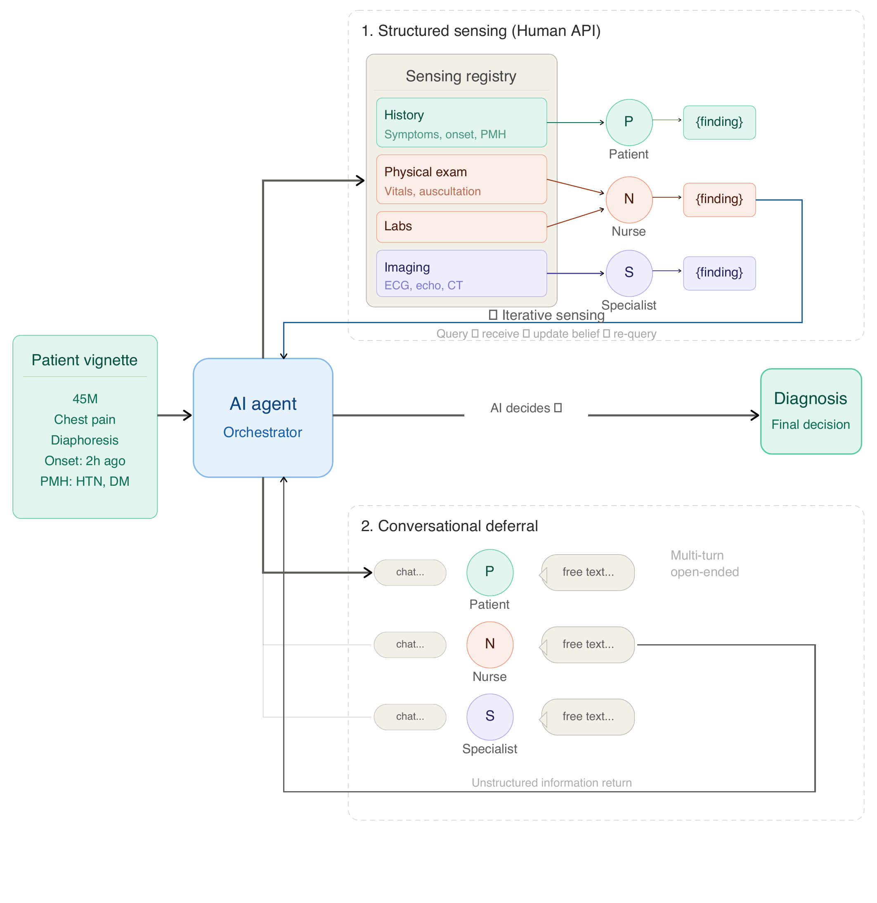
We make three main contributions:
- We formalise human sensing as a cost-aware, multi-action extension of binary deferral and operationalise it through a structured registry of typed sensing actions.
- We evaluate structured and conversational actions in terms of accuracy, cost, information overlap, per-turn uncertainty reduction, and complementarity.
- We show that accuracy in structured sensing grows sublinearly with the size of the action space, and sketch an online adaptive version that learns from interaction via contextual bandits.
2. Setup and Methods
We simulate clinical diagnosis, where diagnostic context can be acquired through priced sensing actions from sources (e.g., nurses, specialists), on MedQA-USMLE [Jin et al., 2020], a 4-option MCQ medical licensing dataset. The diagnostic agent (GPT-4.1) considers age, gender, and chief complaint and uses sensing functions to reduce uncertainty for an accurate diagnosis. Humans are simulated by LLMs with access to ground-truth patient profiles.
Each action $j$ has a fixed cost $c_j$, derived with an LLM to be proportional to the information quantity. Implicit costs are calculated by summing the costs of all sensing actions required to obtain the context. For Implicit (multi), contexts are separated by source. Concretely, the risk and cost are defined as:
$$r_a(x;\, h) = 1 - P(\text{correct} \mid \text{evidence from } a), \qquad c(a;\, x) = c_j \tag{3}$$2.1 Main Comparison
We evaluate mean accuracy, cost, and turns on 582 cases and compare human sensing (H-API) and the conversational (Implicit) against the Baseline (model alone floor) and the Baseline-Full (model with full ground-truth context ceiling). We compare the H-API across three levels of registry granularity: Fine (62 atomic sensing actions), Medium (20 actions composed of fine), and Coarse (8 broad categories).
2.2 Information Analysis
To understand the two strategies in terms of information gathering, we perform two analyses. First, we classify the set of actions corresponding to each implicit turn with an LLM judge (GPT-4.1-mini) on $N = 479$ shared cases to calculate coverage, Jaccard similarity, and novelty rate. Then, we study the per-turn information gain and uncertainty reduction by inserting diagnostic checkpoints at each sensing turn and using a separate scoring model to estimate $P(\text{correct option} \mid \text{evidence so far})$ on a subset of 100 cases.
2.3 Complementarity Analysis
Human–AI collaboration is complementary when the team outperforms either party alone [Bansal et al., 2021]; formally:
$$R(\pi^\star) < \min(R_{\text{model}},\, R_{\text{human}}) \tag{4}$$under optimal deferral. We compare the agreement between H-API (fine) and Implicit (single) on 582 shared cases. For the 76 cases where they disagree, we attempt to pick the better one based on self-reported confidence and an independent LLM judge (GPT-4.1) that picks the most plausible diagnosis based on reasoning, and compare that to an oracle that always selects the better strategy.
2.4 Action-Space Scaling
We vary the sensing registry from $k = 0$ to $k = 60$, randomly picking $k$ actions with replacement, in 5 repetitions of 50 cases each per registry size, to study how the action space affects accuracy and cost. When drawing $k$ actions uniformly with replacement from a registry of $n$ actions, the expected number of unique actions is:
$$\mathbb{E}[\text{unique}] = n\!\left(1 - \left(1 - \tfrac{1}{n}\right)^{\!k}\right) = 62\!\left(1 - \left(\tfrac{61}{62}\right)^{\!60}\right) \approx 38.6 \tag{5}$$3. Results
3.1 Main Comparison
| Condition | Acc. (%) | Cost | Turns |
|---|---|---|---|
| Baseline | 71.8 ± 3.6 | 0.0 | 1.0 |
| Baseline-Full | 92.8 ± 2.0 | 54.2 | 1.0 |
| H-API (fine) | 85.1 ± 2.9 | 2.6 | 2.5 |
| H-API (medium) | 84.0 ± 2.9 | 7.0 | 2.2 |
| H-API (coarse) | 86.3 ± 2.6 | 13.6 | 2.1 |
| Implicit (single) | 86.8 ± 2.8 | 51.2 | 4.3 |
| Implicit (multi) | 83.5 ± 3.0 | 15.6 | 2.6 |
H-API and Implicit perform with comparable mean accuracy (83.5%–86.8%), both improving over the Baseline (71.8%) but not reaching Baseline-Full (92.8%). H-API spent fewer resources than Implicit at all granularities, showing the benefit of structured sensing in requesting targeted cost-aware actions. The total cost increases as the registry size becomes coarser.
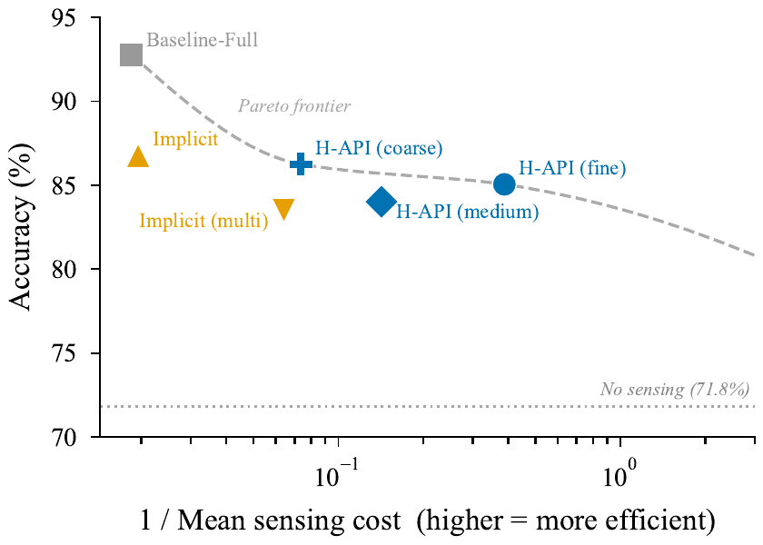
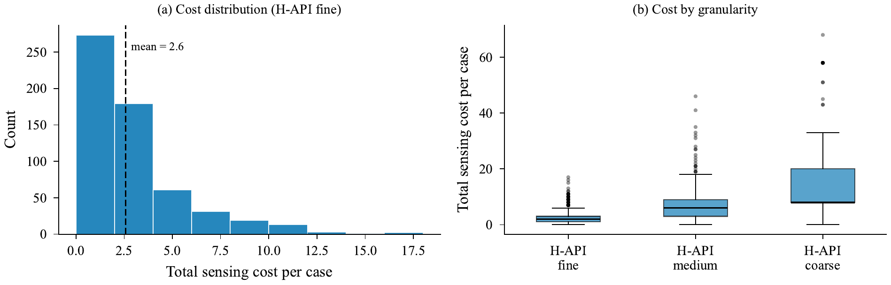
3.2 Information Analysis
| Metric | Value |
|---|---|
| Impl. turns / case | 3.7 |
| Impl. actions / case | 4.9 |
| H-API actions / case | 1.9 |
| Coverage | 0.478 |
| Jaccard similarity | 0.199 |
| Novelty rate | 2.7% |
The information analysis reveals that Implicit and H-API gather largely different information (Jaccard similarity of 0.199). Implicit utilizes 4.9 actions on average compared to 1.9 for H-API. They also differ in how quickly they reduce uncertainty.
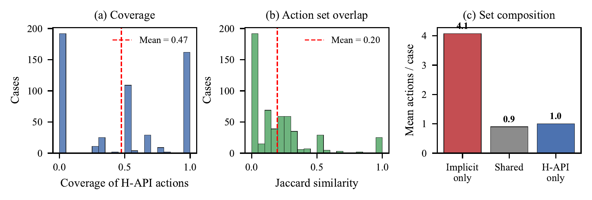
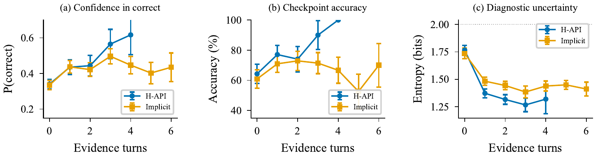
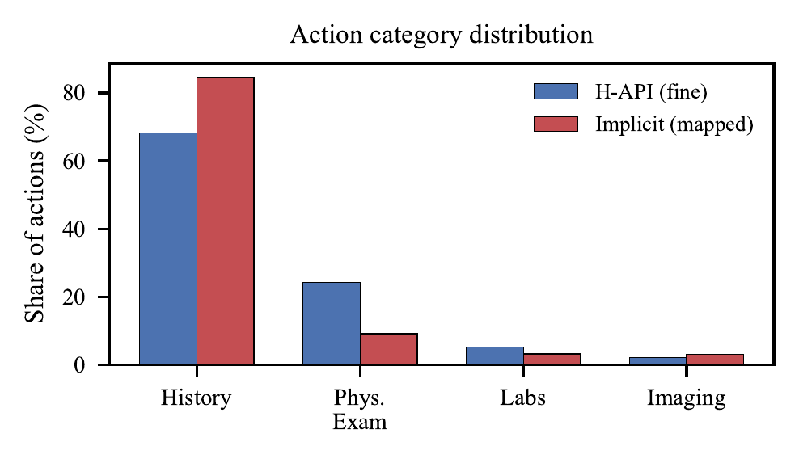
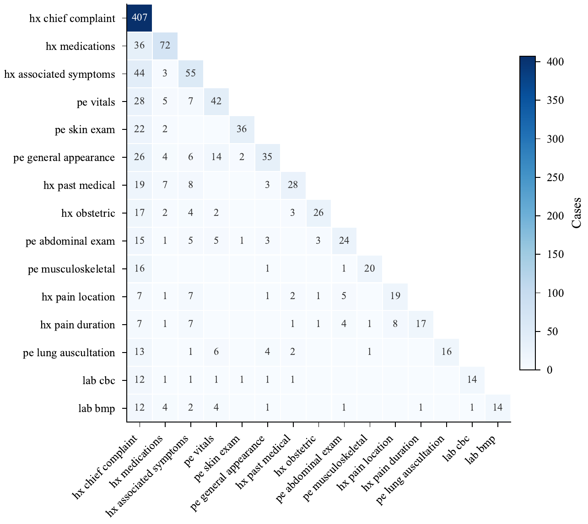
3.3 Complementarity Analysis
The complementarity analysis reveals H-API and Implicit agree on 80.1% of cases, each uniquely solving 5–6% of cases, resulting in an oracle selector scoring 87.8% [85.2, 90.4]. In the 76 cases where they disagree, confidence-based switching scores 47% (slightly better than a coin flip at 44%) while the LLM judge reached 60%, improving over each independently but still far from the oracle selector (88%).
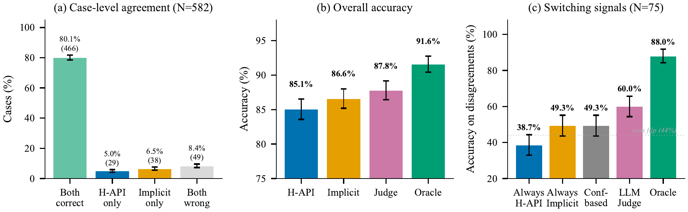
3.4 Action-Space Scaling
The action-space scaling experiment for H-API shows accuracy rises sublinearly with registry size, plateauing at $87.6 \pm 3.2\%$ around $k = 30$. Cost does not grow beyond registries of 25. In all cases, the diagnostic agent utilized at most 5 actions. These results suggest that a small, well-curated registry captures most of the performance gains.
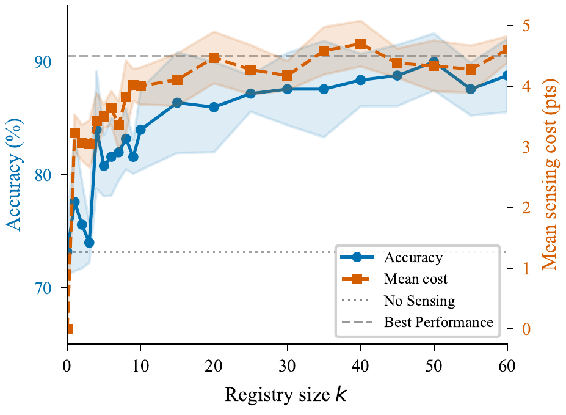
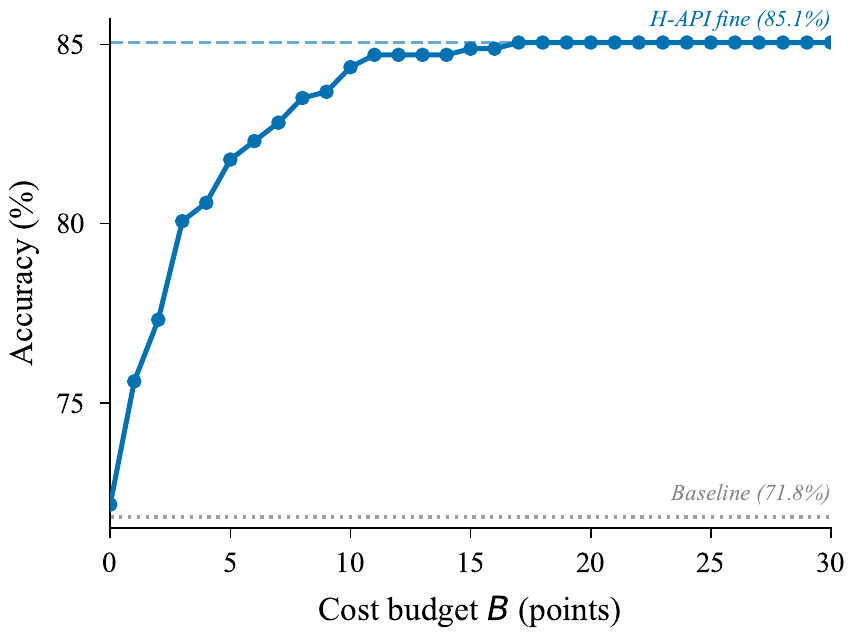
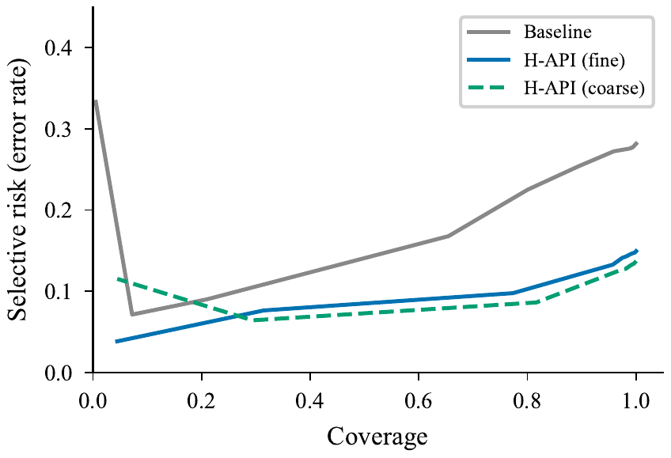
4. Discussion
From Deferral to Sensing
Unlike binary deferral [Mozannar and Sontag, 2020], [Madras et al., 2018], the agent dynamically selects which human sensor to query based on its current belief state. We hypothesize that structured human sensing may redefine the human role in existing workflows, yielding benefits such as reduced workload or algorithmic upskilling, but also risks cognitive offloading [Gerlich, 2025], skill atrophy [Macnamara et al., 2024], and meaning erosion. Future work should focus on developing human-centric designs and validating them through real-world human experiments.
When Sensing Hurts
In approximately 5% of cases, sensing decreases accuracy due to noisy or misleading responses. The optimal policy must account for when human input degrades decision-making. Identifying when to abstain from sensing is an open problem for future work.
Online Adaptation
In deployment, the fixed routing policy could be improved via online adaptation that learns from interaction. A contextual bandit [Li et al., 2010] can learn which sensing actions to select from per-case diagnostic feedback while accumulating aggregate statistics about actions and sources that enrich the LLM’s context over time.
Exploration is budget-constrained: at each turn the agent restricts its choices to the budget-feasible action set:
$$\mathcal{A}_{\mathrm{afford}} = \{a \in \mathcal{A} : \text{cost}_t + c(a) \leq B\} \tag{6}$$With probability $\epsilon_0$, the system explores by sampling from $\mathcal{A}_{\mathrm{afford}}$ with $P(a) \propto 1/(n_a + 1)$, naturally favouring under-explored actions. Thompson sampling [Agrawal and Goyal, 2013] or LinUCB [Li et al., 2010] could replace $\epsilon$-greedy.
Limitations
Our study has several strong limitations. Human sensors are simulated with LLMs that may not accurately represent the cognitive, functional, and physical capabilities of real people. Furthermore, we evaluate a single domain and model provider. The action registries are generated by LLMs, and the costs used are fixed points rather than real-world prices. All experiments are sensitive to the prompts, and verbalized confidence is known to be poorly calibrated [Xiong et al., 2024], [Groot and Valdenegro Toro, 2024]. The sample sizes are small (582 cases, 100-case information subset), limiting statistical strength. Finally, the bandit algorithm has not been validated empirically and assumes stationarity that may not hold in practice.
5. Conclusion
Motivated by a transition from AI-assisted to human-assisted workflows, we proposed exposing humans as callable sensors via a structured API and studied this approach in terms of accuracy, cost, information gathering, and uncertainty reduction. The simulated experiment showed increased accuracy over the baseline and reduced cost compared to the free-form conversational interface. Additionally, we explored how the action space affects performance and found that smaller, well-curated sensing registries capture most of the accuracy gains cost-effectively. Finally, we discussed an online, adaptive version that learns action and source utility through interaction via contextual bandits. We hope our framework motivates real-world implementations and future research on it, particularly regarding its human-centric effects.
References
- [Agrawal and Goyal, 2013] Shipra Agrawal and Navin Goyal. Thompson sampling for contextual bandits with linear payoffs. In International Conference on Machine Learning, pages 127–135. PMLR, 2013.
- [Bansal et al., 2021] Gagan Bansal, Tongshuang Wu, Joyce Zhou, Raymond Fok, Besmira Nushi, Ece Kamar, Marco Tulio Ribeiro, and Daniel S. Weld. Does the whole exceed its parts? The effect of AI explanations on complementary team performance. 2021. arXiv:2006.14779.
- [Bhatt, 2026] Umang Bhatt. AI agents are recruiting humans to observe the offline world. Noema Magazine, March 2026. noemamag.com.
- [Gerlich, 2025] Michael Gerlich. AI tools in society: Impacts on cognitive offloading and the future of critical thinking. Societies, 15(1), 2025. doi:10.3390/soc15010006.
- [Groot and Valdenegro Toro, 2024] Tobias Groot and Matias Valdenegro Toro. Overconfidence is key: Verbalized uncertainty evaluation in large language and vision-language models. In Proceedings of the 4th Workshop on Trustworthy Natural Language Processing (TrustNLP 2024), 2024. doi:10.18653/v1/2024.trustnlp-1.13.
- [Jin et al., 2020] Di Jin, Eileen Pan, Nassim Oufattole, Wei-Hung Weng, Hanyi Fang, and Peter Szolovits. What disease does this patient have? A large-scale open domain question answering dataset from medical exams. 2020. arXiv:2009.13081.
- [Li et al., 2010] Lihong Li, Wei Chu, John Langford, and Robert E Schapire. A contextual-bandit approach to personalized news article recommendation. In Proceedings of the 19th International Conference on World Wide Web, pages 661–670, 2010.
- [Macnamara et al., 2024] Brooke N. Macnamara, Ibrahim Berber, et al. Does using artificial intelligence assistance accelerate skill decay and hinder skill development without performers’ awareness? Cognitive Research: Principles and Implications, 9, 2024. Semantic Scholar.
- [Madras et al., 2018] David Madras, Toniann Pitassi, and Richard Zemel. Predict responsibly: Improving fairness and accuracy by learning to defer. 2018. arXiv:1711.06664.
- [Mozannar and Sontag, 2020] Hussein Mozannar and David Sontag. Consistent estimators for learning to defer to an expert. In Proceedings of the 37th International Conference on Machine Learning, volume 119, pages 7076–7087. PMLR, 2020. proceedings.mlr.press.
- [Raghu et al., 2019] Maithra Raghu, Katy Blumer, Greg Corrado, Jon Kleinberg, Ziad Obermeyer, and Sendhil Mullainathan. The algorithmic automation problem: Prediction, triage, and human effort. 2019. arXiv:1903.12220.
- [Tang et al., 2026] Yuanrong Tang, Huiling Peng, Bingxi Zhao, et al. Human tool: An MCP-style framework for human-agent collaboration. 2026. arXiv:2602.12953.
- [Xiong et al., 2024] Miao Xiong, Zhiyuan Hu, Xinyang Lu, et al. Can LLMs express their uncertainty? An empirical evaluation of confidence elicitation in LLMs. 2024. arXiv:2306.13063.